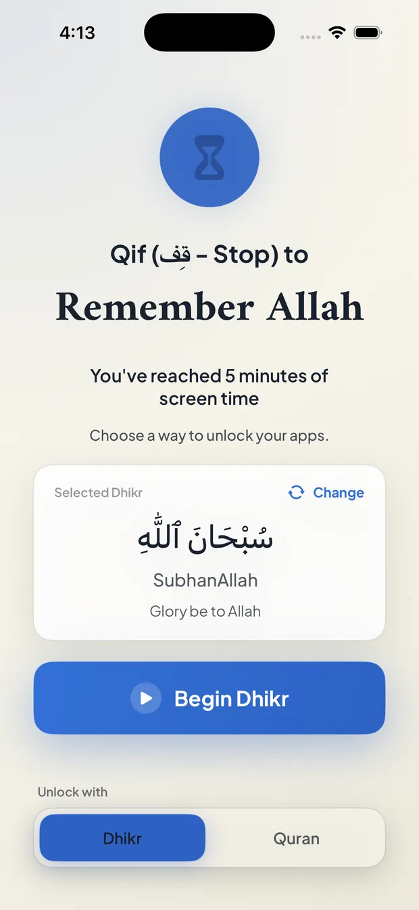
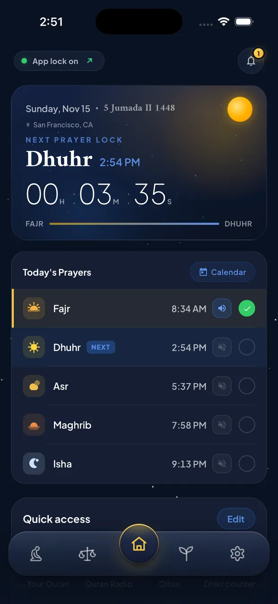
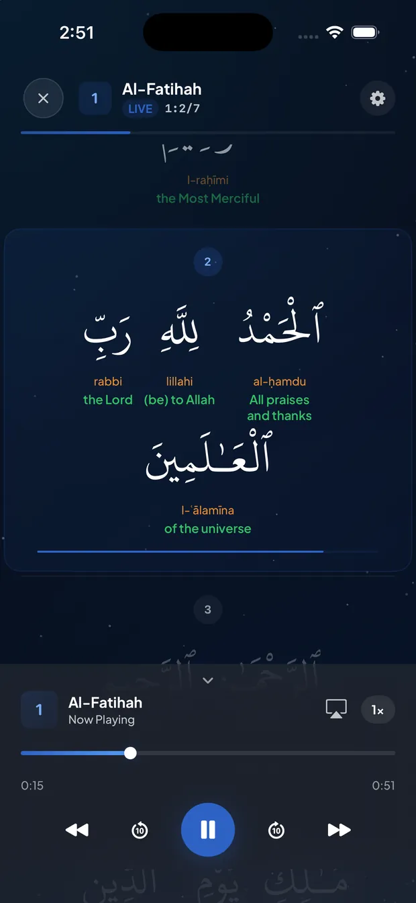
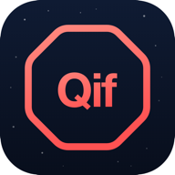
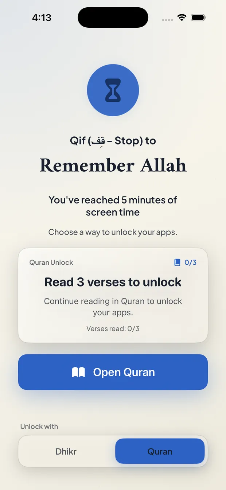
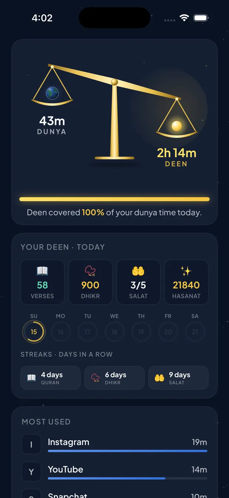
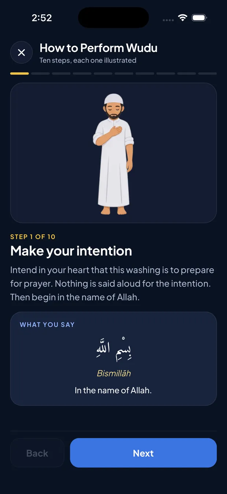
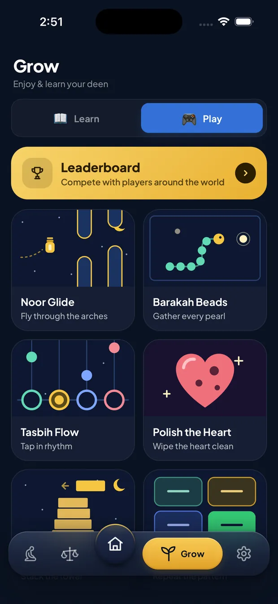
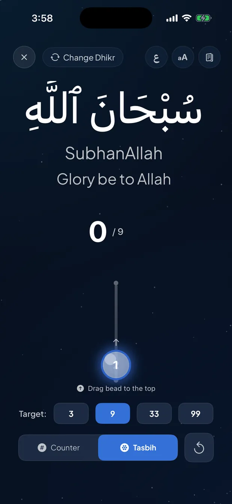
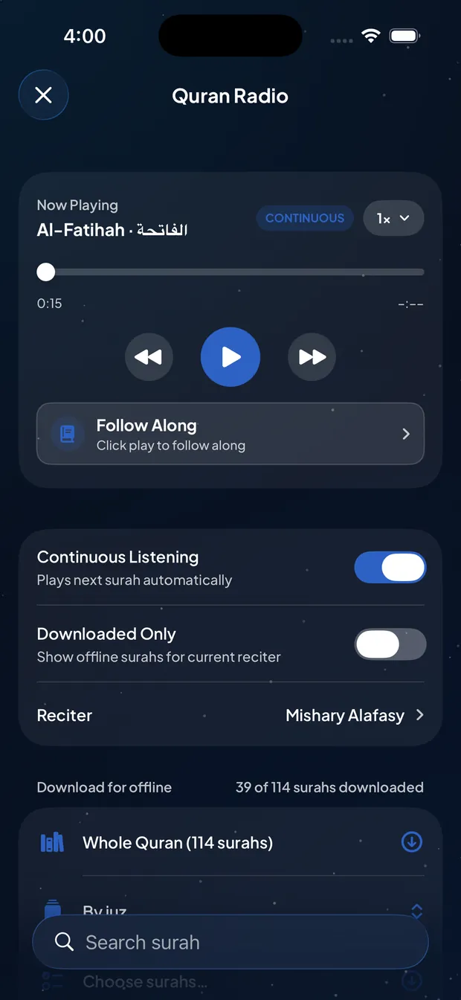

Say a dhikr out loud.
Qif listens as you say SubhanAllah, Alhamdulillah or another dhikr you pick. Finish the count and your apps open again.
Prayer times, Quran, dhikr, Qibla and games in one app. When it's time to pray, Qif pauses your distracting apps. To open them again, say a dhikr or read a few verses.



Swipe
Most people keep a separate app for every part of their deen — then a focus app to stop scrolling past it all. Qif is all of them, in one place.

Qif One app — and the only one that pauses the distraction for you when it's time to pray.At every prayer time — and when your daily limit runs out — Qif pauses the apps you choose. To unlock them, you remember Allah.
Qif listens as you say SubhanAllah, Alhamdulillah or another dhikr you pick. Finish the count and your apps open again.

Open the Quran and read a few verses. When you’re done, your apps come back — and the scrolling time turned into worship.
A fresh home you can arrange yourself, the Quran word by word, guides you can follow step by step, and games that count your dhikr.

Verses read, dhikr said and prayers prayed sit on one side. Time on your phone sits on the other. See which way your day leans.
Every word lights up as it’s recited, with its meaning right under it. Read along and learn what each word says.

Illustrated guides walk you through wudu and the full prayer, one step at a time, with what to say at each step.

Noor Glide, Barakah Beads, Tasbih Flow, Polish the Heart, Minaret Builder and Echo of Adhkar. You play by saying dhikr out loud — then climb the leaderboard.

Tap to count, or slide the beads one by one like the real thing. Pick a dhikr and a target — 33, 99 or your own.

Let the Quran play surah after surah. Download the surahs you love and listen with no signal at all.
Six apps’ worth of features in one — so your prayers, your Quran and your dhikr all live in the same place.
Never guess when it’s time again.
All 114 surahs, word by word.
Keep the Quran playing.
Count your dhikr, your way.
The reason people keep Qif.
See your days add up.
Twelve languages, with full right-to-left support for Arabic, Urdu and Farsi.
Prayer, Quran, dhikr, Qibla and games — on iPhone, with a free option for anyone who needs it.
Questions